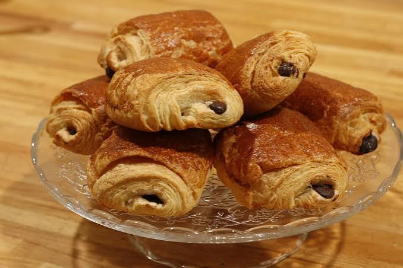
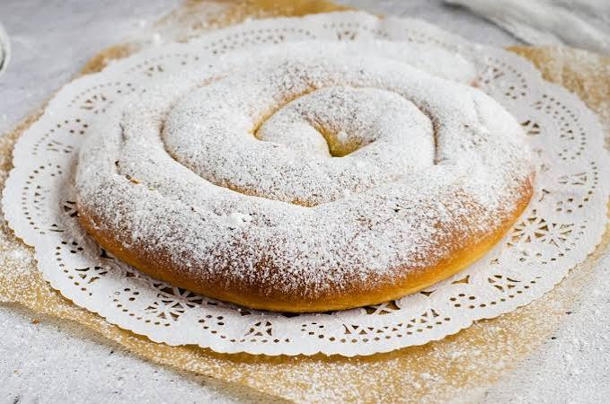
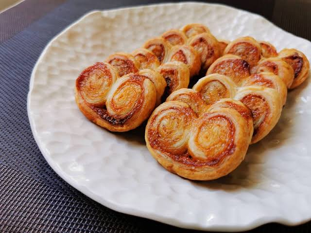
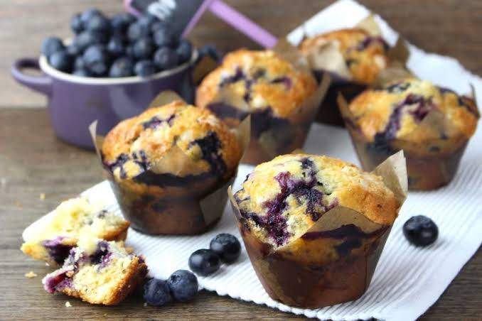
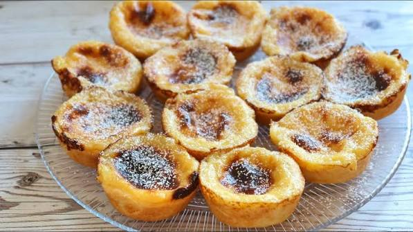
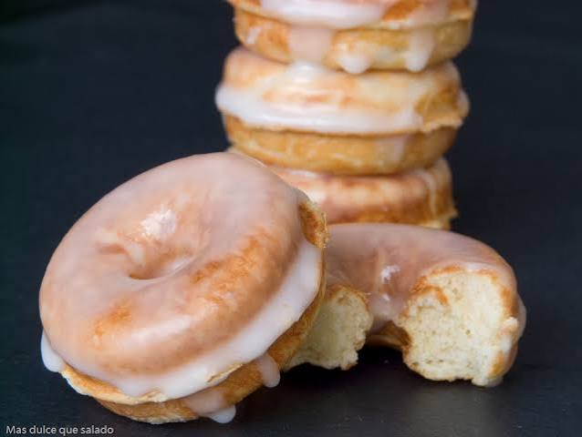
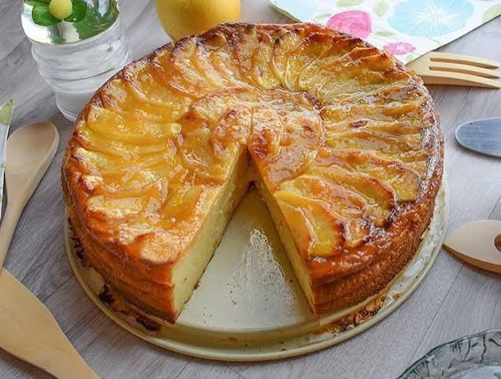

Pastelería-bollería
En esta sección, encontrarás todos nuestros pasteles y nuestra bollería.
Croissant artesanal de mantequilla
Crujiente por fuera y hojaldrado por dentro, elaborado con mantequilla artesanal siguiendo la receta tradicional.
| Ingredientes |
Elaboración |
Fotografía |
- Harina de fuerza
- Mantequilla
- Leche
- Azúcar
- Levadura fresca y sal
|
Se prepara la masa y se deja reposar. Se incorpora la mantequilla mediante plegados sucesivos para lograr el hojaldrado. Se cortan los triángulos, se dan forma y se hornean a 190 ºC hasta dorar.
|
|
Napolitana de chocolate
Hojaldre tierno horneado cada mañana y relleno con dos barras de cremoso chocolate negro.
| Ingredientes |
Elaboración |
Fotografía |
- Masa de hojaldre
- Mantequilla
- Chocolate negro 55%
- Huevo para pincelar
|
Se estira la masa de hojaldre en rectángulos, se envuelven las barritas de chocolate, se pintan con huevo batido y se hornean a 200 ºC durante 18 minutos.
|

|
Ensaimada tradicional
Masa enroscada en espiral, esponjosa y ligera, espolvoreada con abundante azúcar glas.
| Ingredientes |
Elaboración |
Fotografía |
- Harina de fuerza
- Manteca de cerdo
- Huevos
- Azúcar y levadura
|
Se estira la masa muy fina, se unta con manteca de cerdo, se enrolla en cilindro y luego en forma de espiral. Larga fermentación de 12 horas antes de hornear a 180 ºC.
|

|
Palmera de hojaldre caramelizada
Crujiente palmera de hojaldre horneada con capa de azúcar caramelizado en los bordes.
| Ingredientes |
Elaboración |
Fotografía |
- Harina de trigo
- Mantequilla
- Azúcar blanquilla
- Agua y sal
|
Se plega el hojaldre espolvoreando abundante azúcar entre capa y capa. Se cortan rodajas de la masa enrollada y se hornean a 210 ºC voltiándolas para caramelizar ambos lados.
|

|
Muffin de arándanos y limón
Bizcocho jugoso y esponjoso repleto de arándanos frescos y un sutil aroma a ralladura de limón.
| Ingredientes |
Elaboración |
Fotografía |
- Harina de repostería
- Arándanos frescos
- Ralladura de limón
- Aceite de girasol, huevos y leche
|
Se mezclan los ingredientes secos por un lado y los líquidos por otro. Se unen suavemente sin batir en exceso, se añaden los arándanos y se hornea en tulipas de papel a 190 ºC por 22 minutos.
|

|
Pastel de crema catalana / Belém
Cazoleta de hojaldre muy crujiente rellena de crema pastelera horneada y dorada en la superficie.
| Ingredientes |
Elaboración |
Fotografía |
- Masa de hojaldre
- Yemas de huevo
- Leche y nata
- Azúcar, canela y piel de limón
|
Se forran moldes metálicos con hojaldre. Se vierte la crema infusionada con canela y limón y se hornea a muy alta temperatura (250 ºC) durante pocos minutos para dorar la superficie.
|

|
Donut / Rosquilla glaseada tradicional
Rosquilla frita esponjosa con una fina y crujiente cobertura de glaseado de azúcar.
| Ingredientes |
Elaboración |
Fotografía |
- Harina de gran fuerza
- Mantequilla, leche y huevos
- Azúcar glass para el glaseado
- Levadura fresca y vainilla
|
Masa fermentada cortada en aros. Tras un segundo reposo, se fríen en aceite suave hasta dorar ambos lados. Se escurren y se sumergen aún tibios en el baño de glaseado de azúcar.
|

|
Tarta artesanal de manzana
Porción de tarta sobre base de masa quebrada, crema pastelera y láminas de manzana doradas al horno.
| Ingredientes |
Elaboración |
Fotografía |
- Masa quebrada (brisa)
- Manzanas tipo Reineta
- Crema pastelera
- Mermelada de albaricoque para dar brillo
|
Se extiende la masa en el molde, se cubre con crema pastelera y se disponen las manzanas laminadas. Se hornea a 180 ºC durante 40 minutos y se pincela con mermelada caliente.
|

|